| |
|
SIHHİ TESİSAT VE DAĞITIM. BORULAR
|
Boru tipi eksen tanımlama
Hendekteki boru Destekli boru Boru verileri Vektörel borular Servis yolu Yığınlar Genel Bilgiler Şebekeler Bir şebeke, topolojik kavramıyla, geometrik olarak tanımlanmış ve birbiriyle ilişkili aşağıdaki elemanlardan oluşur:
Şebekelerin geometrik tasarımı Bir şebeke, çoklu çizgilerden oluşan bir çizimden tanımlanabilir; bu çizim, diğer programlarda oluşturulmuş çizimlerden içe aktarılabilir, genel CAD'imizde bir çizimden dönüştürülebilir veya şebekelerin geometrik tasarım çalışma ortamında tanımlanabilir. Şebekelerin geometrik tanım çalışma ortamında, noktalar, yaylar vb. oluşturmak için araçlar bulunur; bu araçlar, kullanıcıyı topolojik olarak tutarlı ve kullanılan fiziksel bileşenlerin geometrik kısıtlamalarıyla uyumlu bir geometrik yapı oluşturma ve değiştirme konusunda yönlendiren geometrik yardımlar ve kısıtlamalar sunar. Ayrıca, mevcut nesnelerin oluşturulması sırasında ve daha sonra, sonraki düzenlemeler ve değişikliklerde değiştirilmesine olanak tanır. Bileşen tabloları Bileşen tabloları, bir şebeke oluşturmak için mevcut olan her bir nesnenin veya bileşenin özelliklerini (geometrik veya başka türden) tanımlayan veri yapılarıdır. Her bileşenin, onu karakterize eden özellikleri ve geometrik sınırlamaları vardır. Fiziksel bir şebekenin tasarımında temel olarak doğrusal bileşenleri veya yayları (borular, hendekler, kanallar,...) ve düğüm noktaları olarak bağlayıcıları veya aksesuarları (dirsek, T, baca,...) kullanırız. Tasarım ortamı ISTRAM®/ISPOL®'ün yatay güzergah tasarımı gibi bir ortam, şebeke tasarlamak için gereksiz yere karmaşık görünüyor. Bir çoklu çizgi oluşturmaya daha yakın bir şey daha uygun görünüyor. Ayrıca, bir yayın ilk noktasını tıklayarak bir yay oluşturmaya olanak tanıyan bir araca sahip olmak uygun olurdu; bu araç, hemen sağda ve solda kabul edilebilir minimum yarıçaplı yayın yankısını ve ikinci köşe noktası tıklanana kadar lastik bant segmentini görselleştirmelidir. Tıklandıktan sonra, yankı, yayda uygulanacak yarıçapı belirleyen bir ara nokta girilecek şekilde değişmelidir. İkinci yay olduğunda, yankı, her bir mevcut aksesuar için kapsama açılarını göstermelidir; çıkış azimutu olarak bir öncekinin sonu artı boşluk (90 derece +/- boşluk, 120+/- H,...) kullanarak, kullanıcının her aksesuar için mevcut alanı görmesini sağlar. Haritadaki nesnelere referans, ayrıca, bir kaldırım kenarına belirli bir mesafede ve belirli bir derinlikte paralel bir bölüm çizmek için çok önemlidir. Yatay güzergah tasarımı Yatay güzergah ekseninin tasarımı için iki seçenek mevcuttur: geleneksel menüyü veya borulara özel menüyü kullanmak. Her durumda, amaç aynıdır: eksenlerin yatay güzergah tasarımını içeren .cej dosyasını elde etmek. Geleneksel menü ile yatay güzergah tasarımı Bu durumda, karayolu ve demiryolu eksenleri için kullanılan aynı yatay güzergah tasarım menüsü kullanılır, ancak farklı boru kesitlerinin, doğrudan birleştirilmiş ardışık güzergah elemanlarına göre tanımlanabilmesi özelliğiyle (yatay birleşim kurpları olmadan, elbette). Bu nedenle, programın tespit ettiği köşeli noktalarla ilgili hata mesajı göz ardı edilmelidir. Bu aşamada, güzergah elemanlarını birleştirmek için önceki köşe noktasına kenetlenme [V] yararlı olabilir.  Boruların yerleştirileceği hendeklerin yatay güzergah tasarımında, yarıçap kullanmak alışılmış bir durum değildir, bu nedenle tasarım bir dizi düz güzergah elemanından oluşabilir. Yine de, gerekirse kurb elemanları da tasarlanabilir. Borulara özel menü ile yatay güzergah tasarımı YATAY GÜZERGAH yüzer penceresinde, Boru onay kutusu bulunur. Etkinleştirilirse, borular için yatay güzergah ekseninin tanımı için yeni bir pencere açılır. 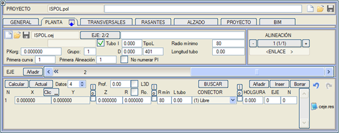
Kullanıcıya, YATAY GÜZERGAH › [YARDIMCI PROGRAMLAR] › Ekseni boruya dönüştür dikey menüsünden, geleneksel şekilde tanımlanmış yatay güzergah eksenlerini Boru moduna dönüştürme imkanı hatırlatılır. Bu menüde görünen seçeneklerin birçoğu, geleneksel yatay güzergah tasarım menüsü ile aynıdır, bu nedenle aşağıda yalnızca bu tür projelere özgü olanlar açıklanmaktadır.
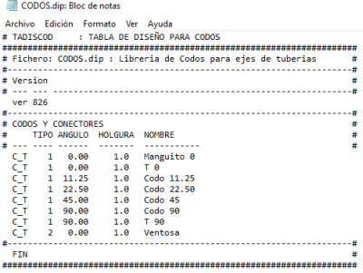
Büyük çaplı borular için, ISPOL kütüphanesindeki CODOS_RADIO.dip tablosu gibi, bazı bağlayıcıların belirli bir yarıçapa sahip olduğu yatay güzergah tasarım tablolarında tanımlanmasına izin verilir.
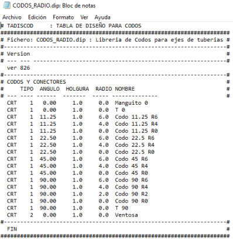
ISTRAM'ın oluşturduğu dirsekleri kütüphanedeki .3DO dosyalarıyla değiştirmek mümkündür; bunun için yarıçap değeri 3D nesneyle eşleşmeli ve ad alanı, uzantısıyla birlikte dosyanın adı olmalıdır. Yalnızca tek borulu bir TK için mümkündür. 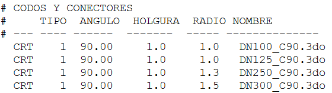 Nesnenin başlangıç noktası dirseğin başlangıcında olmalı, Y+ yönüne yönlendirilmiş, X+ yönüne doğru dönüşlü ve boru ekseninde merkezlenmiş olmalıdır: 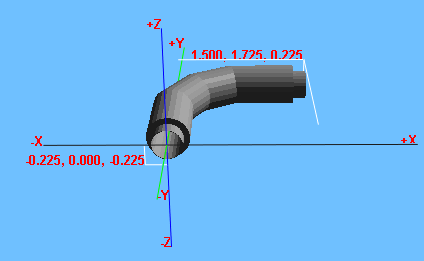 Dirseklerin .dip tablolarında: CODOS.dip ve CODOS_RADIO.dip'te, farklı eleman kategorilerini ayırt etmek için TİP adlı bir sütunumuz bulunmaktadır. Böylece dirseklere, manşonlara ve T'lere TİP 1 atanır ve tablolara yeni bir eleman eklenir: TİP 2 atanan Vantuz. Prensip olarak 5 farklı tip atayabiliriz. 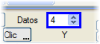 Bu güzergah elemanları menüsünde, her düğüm noktası için aşağıdaki verileri içeren bir satır görünür (diyalog kutusunda görünen veri sayısı 2 ile 20 düğüm noktası arasında değiştirilebilir):
Boru modunda tanımlanmış bir eksen, normal modda tanımlanmış bir eksenin herhangi bir tipindeki bir güzergah elemanından çıkabilir. Alınan nokta, güzergah elemanının teğet noktasıdır ve azimutu, bağlayıcı için açısal referans olarak kullanılır. Boru ekseni, herhangi bir noktanın başka bir eksene yansıtılmasından da çıkabilir. Bunun için, EKSEN alanına diğer eksenin numarası, bitişik N alanına düğüm noktası numarası olarak "0" değeri ve X,Y kutucuklarına yansıtılacak noktanın koordinatları yazılmalıdır. Program daha sonra bu noktayı eksene yansıtır ve azimutu bağlayıcı için açısal referans olarak kullanır. Her düğüm noktası için, koordinatların, yarıçapın veya aksesuarın değerini kilitlemeye izin verilir, böylece önceki bir düğüm noktasında bu verilerden biri değiştirildiğinde, eksenin otomatik yeniden ayarlanması kilitli verileri değiştirmez: 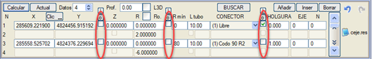
Bir düğüm noktasında elde edilen açı, aksesuarın açısıyla (± boşluk) eşleşmezse, program bu değerleri etkilenen düğüm noktasının altında gösterir.
Kırmızı kot tasarımı. Dairesel kesitli borular ve bacalar Eksen boru tipi olarak tanımlandıktan sonra, KIRMIZI KOTLAR menüsü, alışılmış özelliklere ek olarak bu tür doğrusal yapılar için özel bazı özellikler sunar. Örneğin, birleşim yeri olmayan köşe noktalarının bilgi bandında dirseklerin gerçek açısı da görünür. Kırmızı kot, bir boykesitte borunun en alçak jeneratrisinin (son su damlasının akacağı yer) izini işaretler. Eğer Planda bir boru uzunluğu tanımlanmışsa, bu sekmede borular arasındaki kesişim noktalarını görebiliriz. Kırmızı kotların tanımı, karayolları için izlenenle aynı şekilde, ilgili düşey kurplarla veya kurpsuz olarak yapılır. Burada, ardışık kesimleri birleştirmek için köşe noktasına kenetlenme seçenekleri veya [V] düğmeleri, köşeli noktalar oluşturarak yine çok yararlı olabilir. 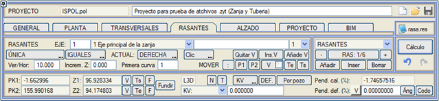
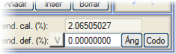Program ayrıca, sağ alt köşede bulunan [Açı] düğmesi aracılığıyla, bir kırmızı kotun eğimini, önceki kırmızı kotla oluşturduğu açıya göre tanımlama imkanı da sunar. Açı aracına benzer şekilde Dirsek aracı, kırmızı kotun eğimini dirsek tablosundan seçmeye olanak tanır. Dirseklerin yarıçapı varsa, bu da önceki ve mevcut kırmızı kot arasında bir birleşim olarak uygulanır. [Bacaya göre] düğmesi, mevcut kırmızı kot verisi için, önceki kırmızı kot verisinin hemen sonraki bacayı kestiği PK1,Z1 koordinatlarını hesaplamaya olanak tanır. 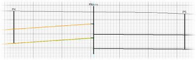Örneğin, eğer bacalar daha önce boykesit boyunca ilgili KM'lerde tanımlanmışsa, bir kırmızı kot güzergah elemanı tanımlanırken ve ikinci güzergah elemanı tanımlanırken [Bacaya göre] seçeneği kullanılırsa, program bu ikinci kırmızı kot güzergah elemanının PK1, Z1 koordinatlarını hesaplar. 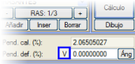Karayolları durumundan farklı olarak, boru kırmızı kotlarının tanımında sık sık dikey kesitler veya sıçramalar görülür. Bunları tanımlamak için, örneğin, önceki köşe noktası verilebilir ve eğimin tanımlanabildiği alanın bitişiğindeki [V] düğmesi basılı tutulabilir (iki P1, P2 noktasıyla yarı-dikey bir kırmızı kot tanımlanması durumunda, mutlak değerde tanımlanan eğim %5000'i aşarsa dikey sıçrama olarak kabul edilir). Bu şekilde 90° eğimli bir kırmızı kot kesiti elde edilir. Yatay güzergah ekseni boru modunda tanımlandığında, program, [YARDIMCI PROGRAMLAR] menüsünde bulunan Yataydan kırmızı kot seçeneği aracılığıyla, yatayda beyan edilen düğüm noktalarının KM'lerini ve kotlarını kullanarak kırmızı kotları oluşturmaya olanak tanır. 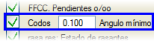 Eğer bu ekranda YATAY GÜZERGAH'ta beyan edilen dirsekleri görüntülemek isterseniz, o zaman dikey menüden erişilebilen görselleştirme seçeneklerinin Dirsekler seçeneği etkin olmalıdır. Etkinleştirildiğinde, açıları söz konusu seçenekte belirtilen minimum açıya eşit veya daha büyük olduğu sürece, bu dirsekler sarı bir daire ile gösterilecektir. 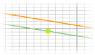
3D U: Mevcut kırmızı kotun P1'ini (PK1,Z1), bu kırmızı kotun eğimini dikkate alarak önceki kırmızı kotun P1'inden uygulanan bir 3D uzunluk aracılığıyla tanımlamaya olanak tanır. (İkinci kırmızı kottan itibaren uygulanabilir). Bacaların veya rögarların tanımı Güzergah elemanları gezgini'nin üzerinde bulunan açılır menü aracılığıyla, [BACALAR] menüsüne geçilebilir. Bacalar (muayene, erişim vb.) genellikle borunun güzergah ve/veya eğim değişikliklerinde, dikey kırmızı kot kesitleriyle çakışacak şekilde yerleştirilir. Mevcut baca ekranda sarı renkte, geri kalan bacalar ise beyaz renkte gösterilir. Rögarlar kırmızı kotlar ekranında mavi renkte gösterilir. Ekle, Araya Ekle ve Sil seçenekleri bilinmektedir; ancak, Araya Ekle seçeneği KM açısından şu şekilde çalışır: varsayılan olarak, mevcut veri ile bir önceki veri arasında bir ara km uygulanır. Bir baca yerine bir rögar ekleyebilmek için sadece Baca kutucuğunu Rögar olarak değiştirmemiz yeterlidir. Bacalar daireseldir ve çapları, radye kalınlıkları ve eksene göre bir eksantriklikle tanımlanırlar. Rögarlar dikdörtgendir ve genişlik, uzunluk, duvar kalınlığı, radye kalınlığı ve eksene göre eksantriklikle tanımlanırlar. Boru Verileri diyalog kutusunda genel seçenek etkinleştirilmiş olsa bile, Baca veya Rögar'ın KM değerinin hemen solundaki kutucuğu etkinleştirerek, bazı bacalarda/rögarlarda boru geçişinin kesilmemesini belirtebiliriz. 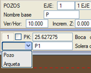
Rögarlar açık bırakılabilir veya üzerlerine bir ızgara veya kapak eklenebilir. Ayrıca, boru eksenine V, paralel veya dik bir bitiş ve bir dZ (kenarların yükseklik artışı) ve bir dX (çatı mahyasının eksantrikliği) verilerek de tanımlanabilir. V'nin çatı mahyası için bir boyuna eğim ve enine eğim tanımlanabilir. Aynı şekilde, bu eğimler bacaların kapak düzlemi için de tanımlanabilir. Bacaların BIM gösteriminde, her bacaya otomatik olarak bir kapak eklenir. Dönüş kutucuğu, söz konusu rögara bir döndürme açısı (derece ve saat yönünün tersine) uygulamamızı sağlar. 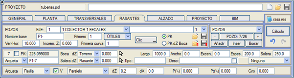 [YARDIMCI PROGRAMLAR] düğmesi, baca tasarımı için çok pratik bir dizi araca erişim sağlar: 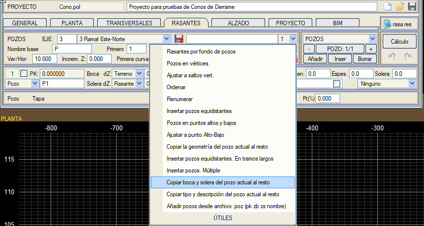
Her baca bir dizi veri ile tanımlanacaktır:
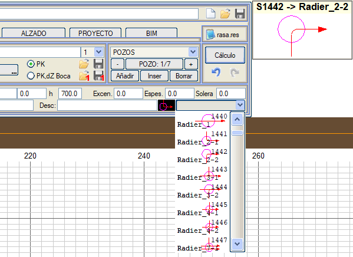
 Rögar Şeması
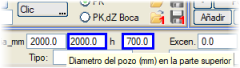Ayrıca, bacalar için üst kısımda, üst çap ve bu bölgenin yüksekliği aracılığıyla konik bir bölge tanımlanabilir. Bu, kırmızı kotlar menüsünde, boykesit çiziminde ve bacanın BIM modelinde temsil edilecektir. Tanımladığımız parametreler aracılığıyla, bu elemanları çizme seçeneğiyle bir .lil dosyası tanımlamışsak, bacaları ve rögarları 3D olarak çizebiliriz.  Bu baca tanımı, bir .pzt tipi dosyaya kaydedilebilir ve menüden çıkmak suretiyle doğrudan ilgili .vol boykesit tanım dosyasına dahil edilir. Bu baca tanımı, bir .pzt tipi dosyaya kaydedilebilir ve menüden çıkmak suretiyle doğrudan ilgili .vol boykesit tanım dosyasına dahil edilir.Bir projede, baca veya boru tanımı içeren bir .vol dosyası yüklendiğinde, BOYKESİT menüsü bu tür projelere uygun bir görünüm alır. RAPORLAR menüsünde, (her baca için) adını ve açıklamasını, KM'sini, ağız kotunu, radye kotunu ve giriş ve çıkıştaki kırmızı kotu gösteren pozos.res raporunu elde etmek mümkündür. Bir *.1pz dosyası (bir baca tanımıyla) yüklendiğinde, bacanın adı (ve KM'si de) değiştirilmez. Bacanın ağzının ve radyesinin dZ değeri üzerinde, mutlak değerler ipucunda gösterilir. Bu değerler, aynı bacayı paylaşan diğer eksenler tarafından görülebilmesi için *.vol dosyasına kaydedilir. 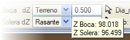 Kırmızı kotlardaki grafik penceresinde, diğer eksenlerin bacaları ve rögarları da gösterilir ve mevcut eksene yansıtılır. Üzerlerinde adları ve tanımlandıkları eksenin numarası görünür. Ve aşağıdaki renkte:
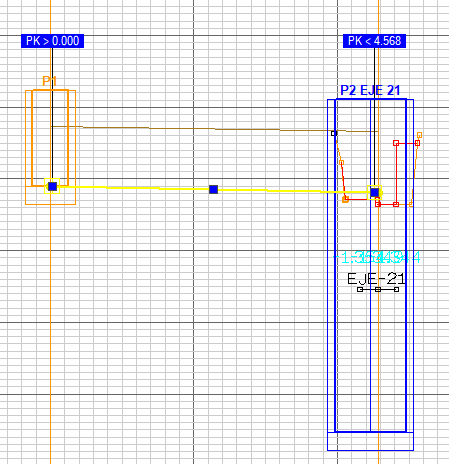 Mevcut eksenin bacası (sarı), Başka bir eksenin rögarı (mavi) Mevcut eksen tarafından geçilen diğer eksenlerde tanımlanmış bacalar da dahil olmak üzere, bacalar arasında çakışma olup olmadığı kontrol edilir. Çakışma durumunda, bacaların bulunduğu bölgede arazi üzerinde kırmızı bir bayrak gösterilir: [Baca Çakışması!]. 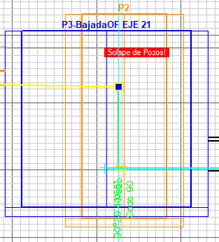 Baca Çakışması! Ayrıca, diğer eksenlerde tanımlanan bacaların taban kotunun mevcut kırmızı kotun altında olup olmadığı da kontrol edilir; aksi takdirde, bacanın tabanında kırmızı bir bayrak gösterilir: [Baca Kotu yetersiz!]. 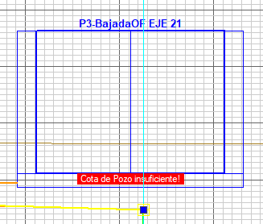 Baca Kotu yetersiz! Açıklama'nın yanındaki kutucuğu işaretlersek, baca veya rögar için bir kazı tanımlayabiliriz. Bu kazı, ekseni çizmek için kullandığımız .lil modunda bacaların çizimi etkinleştirilmişse, planda temsil edilecektir. Ayrıca, her eksen için kazı hacimlerinin metrajını içeren bir exc_pozosN.res raporu ve BIM modelinde bir katı eleman oluşturulacaktır. Not: Diğerlerinin yanı sıra Baca, Baca Kapağı ve Baca Tabanı kenetlenmelerimiz mevcuttur. Kırmızı kotla birlikte görünen Diğer Eksenlerin bacaları da dikkate alınır. Boruların tanımı Güzergah elemanları gezgini'nin üzerinde bulunan açılır menü aracılığıyla, [BORULAR] menüsüne geçilebilir. Boru kesitleri, tanımlanan kırmızı kotu takip eder ve aşağıdaki bilgileri içerir: 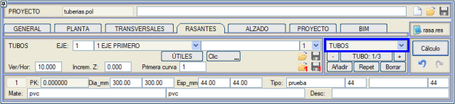
Baca tanımı bölümünde açıklandığı şekilde, yataydaki konumuna tıklayarak KM'yi grafiksel olarak seçmek mümkündür.
Kırmızı kotlar menüsünde ve boykesit çiziminde, borular bacaların bölgesinde, kırmızı kotlar/bacalar/borular menüsünde tanımlanan baca çapı ve kalınlığı kullanılarak kesilir. Tüm boruların tanımı, bir .tbt tipi dosyaya [Kaydet] 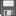 ve [Yükle] ile kaydedilebilir ve geri yüklenebilir, ancak bu gerekli bir adım değildir, çünkü menüden çıkmak suretiyle doğrudan ilgili .vol boykesit tanım dosyasına dahil edilir. Bir projede, baca veya boru tanımı içeren bir .vol dosyası yüklendiğinde, BOYKESİT menüsü bu tür projelere uygun bir görünüm alır. [1'i Kaydet] ve [1'i Yükle] seçenekleri, tüm boru setinin yerine, mevcut borunun çaplarını, kalınlıklarını, malzemelerini, tiplerini ve açıklamasını .1tt uzantılı dosyalara kaydetmeye veya geri yüklemeye olanak tanır. [YARDIMCI PROGRAMLAR] düğmesinden araçlara erişilir: 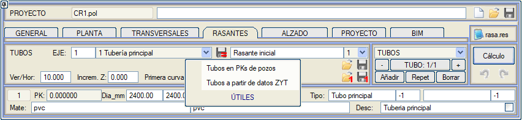
Her bir boruyu yatayda çizmek için farklı bir çizgi tipi tanımlamaya olanak tanır. (tanımlanmazsa, .lil'de verdiğimiz tipi kullanır) ISPOL4.dar tablosundan elde ettiğimiz farklı metrajlar arasında BORU DUVARI metrajını ayırt ederiz. Kırmızı kot yardımcı programları Yardımcı programların büyük çoğunluğu aşağıdaki bağlantıda tanımlanmıştır. Ancak, aşağıda detaylandırdığımız borulara özgü bazı yardımcı programlar bulunmaktadır. 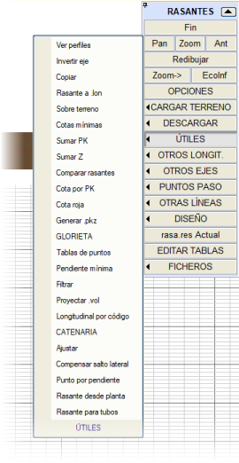
Borular için kırmızı kot: Boru kesitleri için, belirli koşulları karşılayan bir kırmızı kotu otomatik olarak analiz etmeye ve/veya oluşturmaya olanak tanıyan bir aracımız bulunmaktadır:
Otomatik hesaplama için başlangıç ve bitiş KM ve Kotu ile başlangıçtaki eğim tanımlanabilir. Kırmızı kot tasarımı sırasında etkinleştirilebilir:
Referans yüzeyi açılır menüsü ile, arazi enkesitleri dosyasında birden fazla yüzey varsa, referans yüzeyi seçilebilir; bu durum, Boru Verileri'nde şunu kullandığımızda ortaya çıkar: []Doğal zemin + Öngörülen Platform. Enkesit tasarımı Boru tipi eksen tanımlama Bir eksenin program tarafından boru tipi olarak tanınması için, BOYKESİT › TİP › [BORULAR]'da bunu belirtmek gerekir. Bu, hem KIRMIZI KOTLAR hem de BOYKESİT tanım diyalog kutusunun bu tür eksenler için uygun bir görünüm sunmasını sağlar: 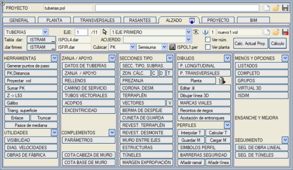
BOYKESİT menüsünün seçeneklerinin çoğu, geleneksel bir eksende kullanılanlarla aynıdır, bu nedenle burada yalnızca bu tür eksenlere özgü olanlar açıklanmaktadır. Hendekteki boru 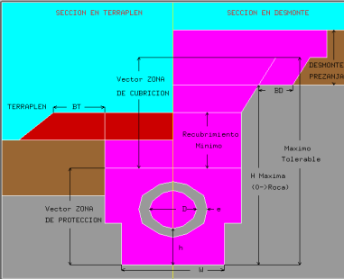[HENDEK/DESTEK] menüsünden, gömülü bir boru durumunda kesit geometrisini tanımlamak mümkündür. İlgili model, parametreleriyle birlikte gömülü bir borunun tip kesit tanımını gösterir; bu parametreler yüzer menüye girilmelidir. Genel olarak, hendek bir koruma bölgesi ve bir örtü bölgesi veya hendekten oluşur. Daha sonra, bir ön hendek tanımlamak gerekirse, bilgiler, geleneksel bir eksenin [YARMA] menüsüne benzer olan [ÖN HENDEK] menüsünde tamamlanacaktır. Diyalog kutusunda, boru sayısı (1 veya 2) ve kesit tipi (simetrik veya asimetrik) belirlenmelidir. KORUMA BÖLGESİ 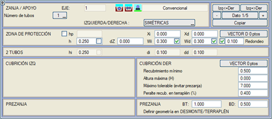
Koruma bölgesi için aşağıdaki parametreler ayarlanabilir:
ÖRTÜ BÖLGESİ 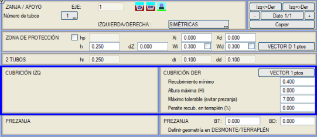
Örtü bölgesinde (hendek ve ön hendekten oluşur) şunlar tanımlanır:
Bu minimum örtü, yarma/dolgu kontrol noktasıdır, öyle ki, eğer arazi seviyesinin üzerindeyse, dolguda bir PD palyesi eklenir ve belirli bir şevle doldurulur.
Aksi takdirde, hendekle devam edilir (maksimum yükseklik ve maksimum tolere edilebilir'e göre).
Eğer arazi seviyesi maksimum yükseklikten (Y) daha yüksekse, kazı arazi seviyesinde sona erer. Ancak, arazi seviyesi maksimum yüksekliği (Y) geçse de maksimum tolere edilebilirin altında kalırsa, kazı yine de arazi seviyesinde tamamlanır: 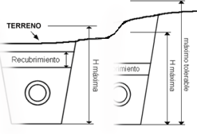
Eğer arazi seviyesi maksimum tolere edilebilir değeri aşarsa, maksimum yükseklikten ve ilgili yarmadan başlayarak bir ön hendek yapılması gerekecektir; hendek vektörü bir PY palyesi ve [ÖN HENDEK] menüsünde tanımlanan kesitle kesintiye uğrar. 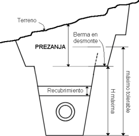
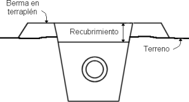Dolgu durumunda palyenin değeri PD'dir ve ondan sonra [DOLGU] menüsünde tanımlanan kesit eklenir. Dolgu durumunda, palye için negatif bir değer girmeye izin verilir. O zaman, eksene en yakın bu noktadan, dolgu vektörünün en yüksek segmentiyle, koruma vektörünü kestiği yere kadar çizilir ve bu segmentin üzerinde kalan koruma dolgusunun tepe noktası silinir. Bu segmentin koruma vektörüyle kesişiminde, yarma mı yoksa dolgu mu uygulanacağı yeniden belirlenir. HENDEK DOLGULARI Bu menü, metraj için hendeğin ayrıştırıldığı dolgu elemanlarını tanımlamaya olanak tanır. İlgili yüzer menü, bir modele göre parametreleri girmeye olanak tanır: 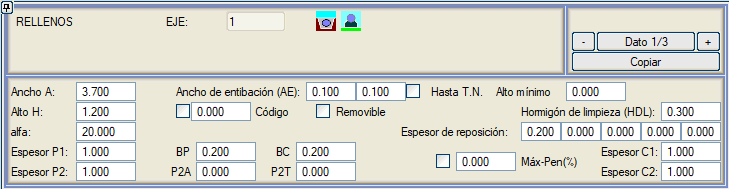
Tanımlanacak parametreler şunlardır:
Her bir taraf için farklı kalınlıkta bir iksa genişliği tanımlanabilir veya bir taraf veya her ikisi iptal edilebilir. Sol kutucuk sol taraftaki iksa genişliği olacak ve sağ kutucuk bize sağ taraftaki iksayı verecektir.
Eğer D.Z.'ye Kadar kutucuğu işaretlenirse, o zaman dolgu kesitlerinde iksa yalnızca doğal zemin yüzeyine kadar yükselir.
İksa, yalnızca hendek yüksekliği minimum yükseklik'te belirtilenden daha büyükse uygulanacaktır. Bu, hendeğin çok derin olmadığı ve dolayısıyla iksa gerektirmeyen kesimlerde, kullanıcının bu iksayı bölümlendirmesine gerek kalmadan programın bunu dikkate almasını önler.
Eğer Ö1 ve/veya Ö2 için negatif bir değer tanımlanırsa, örtü kalınlıklarının yüksekliği arazi kotundan alınır.
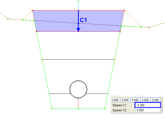
Eğer Sökülebilir İksa işaretlenmişse, iksanın hendekten getirdiği eğimle ön hendekten geçerek araziye kadar yükselmesi, İksayı 10000 koduna kadar yükselt etkinleştirilerek sağlanabilir.
Destekli Boru 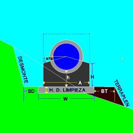İlgili model, borunun destekli olarak yerleştirilmesi durumunda boyutlandırma parametrelerini gösterir. [HENDEK] menüsünde, borunun destekli olarak kabul edilmesi için koruma vektörünün boş olması gerekir. [HENDEK/DESTEK] ve [DOLGULAR] menülerinde aşağıdaki parametreler girilmelidir:
Boru Verileri Eğer güzergah eğimi çok dikse, yüksekliğin araziye normal dikkate alınarak ölçülüp ölçülmediğine bağlı olarak verilerin kullanımında bir miktar hata olacaktır. Bunun için program en doğru seçeneği seçme imkanı sunar. 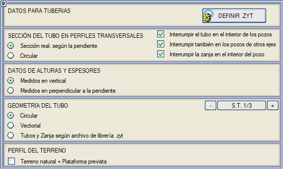
.ZYT TANIMLA (*.ZYT DOSYALARINDA TANIMLANAN KESİT) Bu menüden, *.zyt kütüphane dosyaları kullanılarak tanımlanmış bir kesit kullanılarak hendek, boru ve dolgu malzemelerinin geometrisi tanımlanabilir. Bu .ZYT TANIMLA düğmesi, şunları yapılandırmaya olanak tanıyan bu dosyalar için interaktif bir düzenleyiciye erişim sağlar:
 Adın yanında, Tümü, Sadece borular ve Sadece borular ve Koruma seçenekleriyle bir açılır menü bulunmaktadır. Sadece borular seçeneği hendeği kaldırır ve kesit yalnızca arazi ve boru ile kalır. Sadece borular ve koruma seçeneği, koruma bölgesi ve borular hariç hendeği kaldırır. İki tam ZYT kesiti arasında bir geçiş yapmak mümkündür. Vektörel olarak tanımlanan elemanlar için, başlangıç ve bitiş kesitindeki nokta sayısı aynı olmalıdır. Geçişe izin vermeyen elemanlar veya parametreler için, başlangıç kesiti geçerli olur. ENKESİTLERDE BORU KESİTİ code Code download content_copy expand_less
YÜKSEKLİK VE KALINLIK VERİLERİ code Code download content_copy expand_less Bu veriler, [HENDEK/DESTEK] menüsünde, koruma ve hendek vektörlerinin h, dY değerlerine ve ayrıca minimum örtü, maksimum yükseklik, maksimum tolere edilebilir'e ve [DOLGULAR] menüsünde, Yükseklik Y, GBK, P1, P2, yeniden dolgu kalınlığı, Ö1 ve Ö2 değerlerine referans verir. İki olasılık sunulur: code Code download content_copy expand_less
BORU GEOMETRİSİ code Code download content_copy expand_less Her tip kesit (T.K.) için, boru şunlar olabilir: code Code download content_copy expand_less
Vektörel Borular Bu menü, tünellere benzer şekilde bir dizi boru tanımlamaya olanak tanır. Bu durumda tanım her zaman vektöreldir, ancak iki farklı şablondan yola çıkılabilir: eliptik borular (dairesel dahil) ve dikdörtgen borular (kutu menfez, kutu kesit...). Şablonlarda çaplar veya kenarlar ve kalınlık (mm cinsinden) tanımlanır. code Code download content_copy expand_less Tüm boruların tanımı, .tbv uzantılı dosyalara kaydedilebilir veya yüklenebilir. Tanımlayabileceğimiz borulardan yalnızca birini kaydetmek veya açmak için sırasıyla veya komutlarını kullanacağız; bu komutlar .1tb uzantılı dosyaları kaydedecek veya açacaktır. code Code download content_copy expand_less 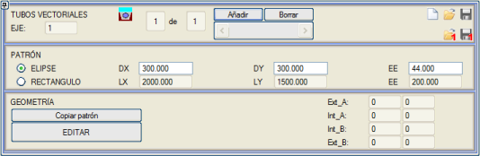
[Şablonu Kopyala] ile seçilen şablondan yola çıkarak, detayları eklemek için geometriyi [DÜZENLE]yebilirsiniz. Geometriler dört yüzeyle oluşturulur:
Koordinatlar kırmızı kota (düşey eksen) göredir. Varsayılan olarak kırmızı kot, borunun iç yüzeyinin tabanının merkezindedir (0.0,0.0). code Code download content_copy expand_less Servis Yolu Bu seçenek aracılığıyla, hendeğin bir veya her iki tarafına bitişik bir servis yolu tanımlamak mümkündür: code Code download content_copy expand_less Servis yolu yalnızca hendeğin solunda, sağında (varsayılan seçenek) veya her iki tarafında ve her zaman Servis yolu oluştur kutucuğu etkinleştirilerek oluşturulabilir. Oluşturulması için gereken diğer değerler, menüye eşlik eden modelden çıkarılabilir. code Code download content_copy expand_less Yarmada, mesafeyi hendek-arazi kesişiminden ölç: Bu durumda, yol hendeği işgal edemeyeceğinden, eksenler arasındaki mesafe yeterli değilse, diğer parametreleri koruyarak yol itilir. Bu seçeneğin yanında, hendek dışında 3. örtüden kaçınmak için bir kutucuk bulunur . Yol terasmanını hendeğe kadar uzat: Bu seçenek, servis yolunun iç kenarı hendek dışında kaldığında kullanılabilir. Yığınlar Bu menüden, hendek kazı ve sıyırma malzemelerini yığmak için gerekli genişliğe sahip bir tip kesit oluşturulabilir. code Code download content_copy expand_less Aynı tip kesit için bir tarafta toprak yığınları ve diğer tarafta servis yolu tanımlanabilir. Bu durumda, bitkisel toprak yığını yapılmaz. code Code download content_copy expand_less Boru projelerine özel metraj tabloları, paftalar ve raporlar Metraj tabloları Borular durumunda kullanılacak metraj tablosu, otomatik olarak yüklenen ISPOL4.dar'dır. BORULAR bölümünde dolgu yüzeyleri oluşturulur: code Code download content_copy expand_less
code Code download content_copy expand_less Metraj tabloları, boruyu bir kutu menfez içinden geçirme durumunda, kutu menfez dolgularını ve kutu menfez temel kazısını bile dikkate alır. =================================================== ENKESİT METRAJLARI* * * =================================================== ENKESİT MALZEME ENKESİT ALANI ARA HACİM TOPLAM HACİM MALZEME ALAN ..... ----------- ---------- ------------ ------------ ------------ ------------- --------- 0.000 DOLGU 8.062 0.00 0.0 Y_TOPRAK 8.562 BİTKİSEL_TOPLAM 6.154 0.00 0.0 GROBETON 2.313 ÖRTÜ_1 10.080 0.00 0.0 ÖRTÜ_3 0.432 KORUMA_3 24.360 0.00 0.0 BİTKİSEL_HENDEK 5.722 BİTKİSEL_ÖNHENDEK 0.432 0.00 0.0 KAZI_HENDEK 8.562 10.000 DOLGU 0.781 44.22 44.2 Y_TOPRAK 23.170 BİTKİSEL_TOPLAM 7.376 67.65 67.7 GROBETON 2.313 ÖRTÜ_1 10.080 100.80 100.8 ÖRTÜ_3 1.205 KORUMA_3 24.360 243.60 243.6 BİTKİSEL_HENDEK 6.171 BİTKİSEL_ÖNHENDEK 1.205 8.18 8.2 KAZI_HENDEK 23.170 20.000 DOLGU 1.944 13.63 57.8 Y_TOPRAK 25.041 BİTKİSEL_TOPLAM 7.966 76.71 144.4 GROBETON 2.313 ÖRTÜ_1 10.080 100.80 201.6 ÖRTÜ_3 7.133 KORUMA_3 24.360 243.60 487.2 BİTKİSEL_HENDEK 5.056 BİTKİSEL_ÖNHENDEK 2.910 20.58 28.8 KAZI_HENDEK 20.818 KAZI_ÖNHENDEK 4.223 21.11 21.1 30.000 DOLGU 1.343 16.44 74.3 Y_TOPRAK 28.650 BİTKİSEL_TOPLAM 8.256 81.11 225.5 GROBETON 2.313 ÖRTÜ_1 10.080 100.80 302.4 ÖRTÜ_3 9.641 KORUMA_3 24.360 243.60 730.8 BİTKİSEL_HENDEK 4.870 BİTKİSEL_ÖNHENDEK 3.386 31.48 60.2 KAZI_HENDEK 22.395 KAZI_ÖNHENDEK 6.255 52.39 73.5 ............................ ............................ =================================================== * TOPLAM HACİM ÖZETİ * * * =================================================== MALZEME HACİM -------------- ---------------- DOLGU 1621.594 Y_TOPRAK 33825.813 BİTKİSEL_TOPLAM 11266.975 İKSA 532.038 GROBETON 2760.564 BORU 6991.810 YENİDEN DOLGU 0.013 ÖRTÜ_1 13437.904 ÖRTÜ_3 4236.832 KORUMA_3 28700.870 BİTKİSEL_HENDEK 8656.692 BİTKİSEL_ÖNHENDEK 2610.283 KAZI_HENDEK 32199.203 KAZI_ÖNHENDEK 1626.617 Paftalar Yatay güzergah eksenlerinin etiketlenmesi için, program kütüphanesinde borulara özel kullanım için .ali dosyaları sunar; örneğin, codos.ali (dirseklerin KM ve açılarını etiketler) ve codos2.ali, şebekenin her bir düğüm noktasına uygulanan bağlayıcıların adlarını (dirsek 45, manşon, vb.) etiketler. Kullanıcıya, bu adların codos.dip gibi bir boru yatay güzergah tasarım tablosunda tanımlanabileceği hatırlatılır. Ayrıca, boru ve bacaların yatayda gösterimi için özel dosyalar da bulunmaktadır, örneğin: tuberias.lil, tuberia2.lil, tuberia3.lil (gerçek açı), tuberia3p.lil (yataydaki açı), tuberia3c.lil (bağlayıcının açısı), tuberia4.lil (gerçek açı), tuberia4p.lil (yataydaki açı), tuberia4c.lil (bağlayıcının açısı) ve tuberias4i.lil (çift boru için). Ayrıca boykesit gösterimi için özel boykesit pafta şablonları da bulunmaktadır: ISP20.gui, ISP22.gui, ISP22b.gui, tubos3.gui, tubos4.gui, tubos5.gui ve tubos6.gui. Raporlar RAPORLAR menüsünde, boru projelerine özel bir bölüm bulunmaktadır ve bu bölüm, aksesuarların özelliklerini, iksa yüzeylerini, boru ve baca envanterlerini vb. elde etmeye olanak tanır. Raporların yapılandırmasında, Hesaplama'da iksa alanları raporunu cvol.res metraj raporuna ekleyip eklememe seçeneğimiz bulunmaktadır. code Code download content_copy expand_less |